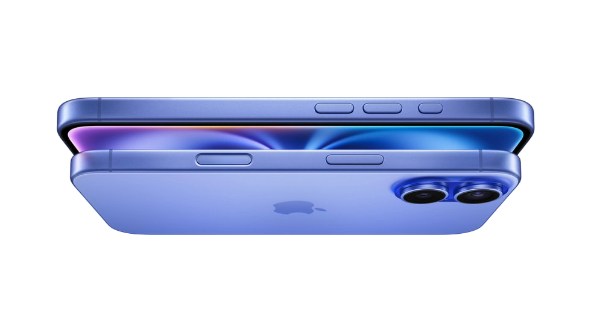
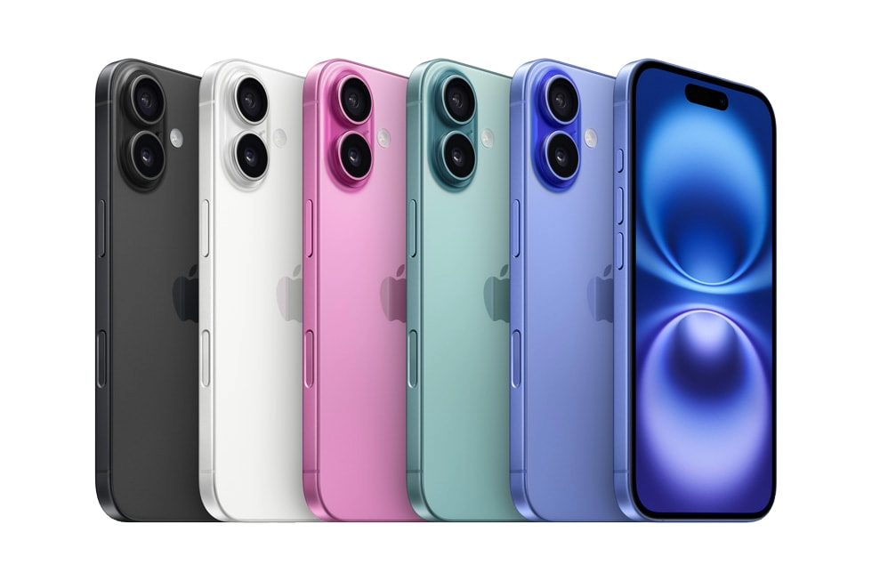

PRESS RELEASE
September 9, 2024
Apple introduces iPhone 16 and iPhone 16 Plus
Built for Apple Intelligence with the all-new A18 chip, both models feature Camera Control, powerful upgrades to the advanced camera system, the Action button to quickly access useful features, and a big boost in battery life
CUPERTINO, CALIFORNIA Apple today announced iPhone 16 and iPhone 16 Plus, built for Apple Intelligence, the easy-to-use personal intelligence system that understands personal context to deliver intelligence that is helpful and relevant while protecting user privacy. The iPhone 16 lineup also introduces Camera Control, which brings new ways to capture memories, and will help users quickly access visual intelligence to learn about objects or places around them faster than ever before. The powerful camera system features a 48MP Fusion camera with a 2x Telephoto option, giving users two cameras in one, while a new Ultra Wide camera enables macro photography. Next-generation Photographic Styles help users personalize their images, and spatial photo and video capture allows users to relive life’s precious memories with remarkable depth on Apple Vision Pro. The new A18 chip delivers a huge leap in performance and efficiency, enabling demanding AAA games, as well as a big boost in battery life.

iPhone 16 and iPhone 16 Plus will be available in five bold colors: black, white, pink, teal, and ultramarine. Pre-orders begin Friday, September 13, with availability beginning Friday, September 20. “iPhone 16 and iPhone 16 Plus mark the beginning of a new era for iPhone with Apple Intelligence delivering powerful, personal, and private experiences to our users,” said Kaiann Drance, Apple’s vice president of Worldwide iPhone Product Marketing. “With new ways to discover the world around you and capture memories using Camera Control; a 48MP Fusion camera that gives you two optical-quality cameras in one; a big boost in battery life; and powerful, efficient performance thanks to the A18 chip, this is the perfect time for customers to upgrade or make the switch to iPhone.”

Click image


Built for Apple Intelligence
Apple Intelligence on the iPhone 16 lineup harnesses the power of Apple silicon and Apple-built generative models to understand and create language and images, take action across apps, and draw from personal context to simplify and accelerate everyday tasks. Apple Intelligence maintains the privacy and security of user data with Private Cloud Compute. This groundbreaking approach provides the ability to flex and scale computational capacity between on-device processing and larger, server-based models that run on dedicated Apple silicon servers — an extraordinary step forward for privacy in artificial intelligence. Apple Intelligence will be available as a free software update, with the first set of features rolling out next month in U.S. English for most regions around the world.